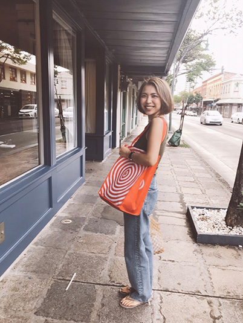

ABOUT

KUMIKO KAMADA
鎌田公美子
1992年1月生まれ。広島県在住。
比治山大学短期大学部
総合生活デザイン学科卒業。20代では海外旅行に没頭し各国訪れ、広い視野を持てるきっかけとなりました。30代になり、デザインという世界の魅力に引き込まれ、気づけば夢中で学び、制作を重ねる日々です。
現在は、アパレルECショップの運営とデザイナーとしての活動を両立しています。一見異なる業界に思えますが、両者は隣り合った関係にあり、互いに良い影響を与え合う存在なのです。ECショップで培った消費者視点や経験はデザインに活かされ、デザインの感性は商品の選定やショップ運営にフィードバックされています。そして、どちらの活動も、生活を彩り豊かにするための表現の場として、日々挑戦を続けています。
運営しているECショプはこちらウラル
自然/健康＆美容活動/Fashion/Baumkuchen
哲学や深〜い話/海外旅行/ガジェット/Cookie/ニョッキ（芋類全般）
YouTube鑑賞（ヒカルch、令和の虎、nontitle、界隈が大好きです笑）